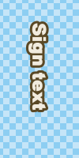
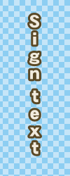

这里列出了Aegisub自带了几个宏。
这个是卡拉OK脚本执行器的宏，用法请参见卡拉OK脚本执行器。
这个宏只有在字幕文件中至少有一行模版行时才可用。
将所有ASCII半角字符转为日文的全角字符。
当你想把竖向排版一些翻译的字母“叠”起来时，可能会有用。
这个宏会修改在字幕栏中当前选择的所有行。
这有一个有排版的文本：
{\fn@DFPGothic-EB\fs26\shad0\fe128\bord3\3c&H25485A&\c&HDEEBF1&\pos(456,184)\frz-90}Sign text
注意这里使用了“@字体”，这是所有CJK字体都有的一种字形，它可以使所有全角字符从基线旋转90度。全角字符不只包括拉丁字母的全角变化版本，日语的假名和日文的汉字、中文的汉字、韩语的汉字以及各种标点符号。
现在运行了这个宏后：
{\fn@DFPGothic-EB\fs26\shad0\fe128\bord3\3c&H25485A&\c&HDEEBF1&\pos(456,184)\frz-90}Ｓｉｇｎ ｔｅｘｔ
这是运行宏前后对比：
 
自动连接选中的卡拉OK行并添加适当的 \k 标签。
设计这个宏的初衷是为了辅助制作卡拉OK特效，尤其是创作过渡或者入场效果。 它很适合被用在应用特效之前。
运行这个宏至少需要选中两行，并且下一行的开始时间要晚于前一行的结束时间。
它会改变除了第一行以外的开始时间，使得每行中间没有空隙，并且添加重新计算过的 \k 标签到第一个音节。
这里是两行“紧密相连的” 卡拉OK行:
Dialogue: 0,0:00:44.46,0:00:46.28,Default,,0000,0000,0000,,{\k15}Ne{\k14}ver {\k14}gon{\k13}na {\k37}give {\k40}you {\k49}up
Dialogue: 0,0:00:46.57,0:00:48.56,Default,,0000,0000,0000,,{\k13}Ne{\k13}ver {\k13}gon{\k13}na {\k36}let {\k46}you {\k65}down
每一行都会随着第一个音节的开始而开始，随着最后一个音节的结束而结束。
现在如果对这两行应用 Automatic karaoke lead-in 宏，结果会变成这样：
Dialogue: 0,0:00:44.46,0:00:46.28,Default,,0000,0000,0000,,{\k15}Ne{\k14}ver {\k14}gon{\k13}na {\k37}give {\k40}you {\k49}up
Dialogue: 0,0:00:46.28,0:00:48.56,Default,,0000,0000,0000,,{\k29}{\k13}Ne{\k13}ver {\k13}gon{\k13}na {\k36}let {\k46}you {\k65}down
第二行的开始时间变成了与第一行结束时间紧邻的情况，并且一个 \k 标签被添加到了第二行的开头。
这个标签对应的空音节我们称之为“间隔”，利用这个部分的时间可以制作入场效果。
这个宏执行会显示这条信息:
Smallest inter-line duration: 290 milliseconds
简而言之，这是说明相邻两行的间隔时间被确定为 290 ms, 或 0.29s, 以便于你确定入场退场特效中使用的时间参数等，同时也可以改善字幕的可读性。
这个宏会用不同方式整理所选行的特效标签。
这个宏也可用作导出滤镜。
The main intended function of this macro is to make karaskel.lua split karaoke lines more sensibly into syllable structures, see the example. 这个宏主要功能是为了让karaskel.lua能够更聪明地将卡拉OK行分割为音节结构，请看如下的例子。
这个宏会修改所有字幕栏中所选行，重写这些行里的所有标签区。
原字幕行
{\r\frz90\k80}Test {\r\fry180\k60}me
Karaskel会创建这些音节结构：
该行执行 整理特效标签 后：
{\k80\r\frz90}Test {\k60\r\fry180}me
现在Karaskel会创建这些音节结构：
它会把特效标签放到处理过的音节上，所以整理后的版本通常是你想要的。
向所选行插入[[\be1|ASS_Tags#bluredges]]标签。轻微模糊所有字幕行的边缘可以显著提高内嵌字幕的压缩率（尤其是使用像XviD这些旧的编码时），但由于字幕格式的限制，边缘模糊无法通过样式来调整。
移除所选行中所有ASS特效标签区和它里面的标签。
选择所有在时间上和其他行的时间轴有重叠的行。这个脚本在查找时间轴错误，或者想为这些重叠的行设置一个新样式来提高可读性时会有些帮助。